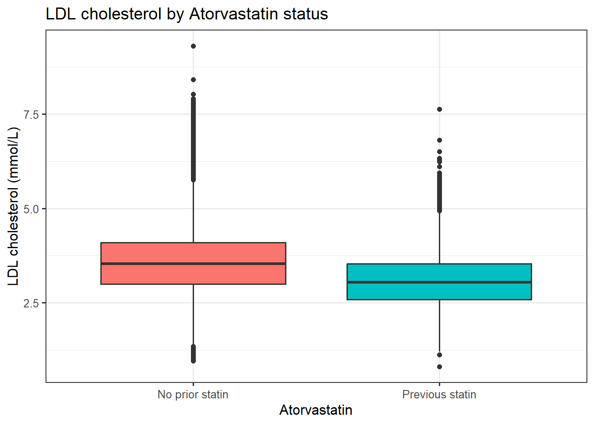
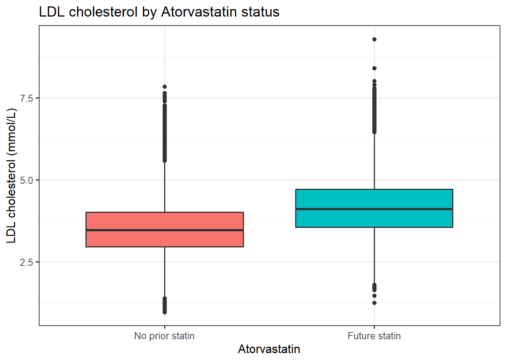

conda activate hpdm208z1 Introduction
In this workshop you will learn how to identify clinical codes for a specific medication (atorvastatin), extract prescriptions that contain this chemical substance, and perform epidemiological analysis with the derived data.
This builds on skills from previous modules, and the workshops you have already undertaken. Refer to previous workshops for Linux and R code to complete this workshop.
We will ascertain prescriptions using codes from the British National Formulary (BNF). The BNF is the “go to” guide for prescribing professionals in the UK (bnf.nice.org.uk).
We’ll use data similar to the UK Biobank, a large 500,000-person cohort that has transformed health data science in recent years (www.ukbiobank.ac.uk). The scale and depth of the data—including genetics, health records, and deep phenotyping—having provided many insights into mechanisms and predictors of health outcomes. The data is synthetic to protect participant anonymity, though it is designed to resemble real UK Biobank data.
2 Setup
2.1 OpenStack
Log in to your OpenStack instance as usual. Activate the conda environment by typing the below into your Linux terminal.
We will use some linux command line tools you have met before for file manipulation, and then R for statistical analysis.
We’ll use functions from the {tidyverse} suite of packages designed for data science. All packages share an underlying design philosophy, grammar, and data structures, providing a comprehensive set of tools for data manipulation, analysis, and visualisation.
If not already installed in your conda environment, type the below into your Linux terminal.
conda install -c r r-tidyverse -yYou can complete this workshop directly in the linux terminal, or create a JupyterLab notebook if you prefer. If the former make sure to save your commands in a text file.
2.2 Working directory
All data for this workshop are on your OpenStack instance at the below location. Code examples assume this is your working directory:
~/hpdm208z/workshops/medications_data/3 UK Biobank GP prescribing data
This synthetic version of primary care (GP) prescribing data linked to UK Biobank can be viewed as below:
zcat ukb_gp_scripts.tsv.gz | head -n15eid date bnf
x100001 2011-02-09 0206020A0AAATAT
x100001 2011-03-04 0206020A0AAATAT
x100001 2011-10-04 0212000B0AAASAS
x100001 2012-04-02 21300000962
x100001 2013-01-15 0212000B0BBACAC
x100001 2013-02-01 0206020A0AAAJAJ
x100001 2013-04-01 0212000B0AAAAAA
x100001 2013-08-20 0206020A0AAAUAU
x100001 2013-09-23 0206020A0AAATAT
x100001 2014-05-30 0212000B0BBAEAL
x100001 2014-12-12 0212000B0AAANAN
x100001 2016-03-17 0212000B0AAAQAQ
x100001 2016-07-29 0212000B0AAAFAF
x100001 2017-03-14 0206020A0AAABABIt is a tab-separated file, where each row is a prescribing event. Each person can have multiple rows, like with the clinical events data.
It is a tab-separated file, where each row is a prescribing event. Each person can have multiple rows, like with the clinical events data. In this synthetic dataset all prescriptions are coded with British National Formulary (bnf) codes. Real data may include other code types, such as SNOMED CT.
4 Identify BNF clinical codes for atorvastatin
The NHS Business Services Authority (BSA) host the current and past releases of the BNF look up files here.
You will find “Historic 2024 Version 86” in a file named:
bnf_code_historic_2024_version_86.tsv.gz(Note I already converted it from a CSV to a TSV when downloading)
Find the BNF Chemical Substance code for “Atorvastatin”.
Because BNF codes are hierarchical, all the BNF Product Codes that include this chemical substance should start with the chemical substance code. Save the chemical substance code to a text file for use later. In some situations you may want to search for multiple chemical substance codes, which is why we will still save to a file rather than typing manually later.
You can use Linux command line tools (such as grep) or you can use R or Python to achieve this.
# get rows with atorvastatin (note the -i 'ignore case' flag)
# select column 10 (chemical substance)
# filter to unique codes
zcat bnf_code_historic_2024_version_86.tsv.gz | grep -i "atorvastatin" | cut -f10 | uniq > bnf_atorvastatin.tsv5 Subset prescription records
Extract the rows in ukb_gp_scripts.tsv.gz that correspond to prescriptions containing the atorvastatin chemical substance. Also include the file header, so that columns are labelled.
Use Linux command line tools (such as grep) to achieve this. Whilst it is possible to load this file into R, it is good practice to subset prior to loading. A real medical records dataset may be many Gb in size.
# first get the header row
zcat ukb_gp_scripts.tsv.gz | head -n 1 > ukb_gp_scripts.atorvastatin.tsv
# next search the GP scripts file for codes contained in a reference file
# we can do this in several ways. We can use grep directly, or use tools such as `awk`
# for BNF we do not want exact matches: we want to match any rows with the prefix
zgrep --fixed-strings --file bnf_atorvastatin.tsv ukb_gp_scripts.tsv.gz >> ukb_gp_scripts.atorvastatin.tsvWe are now ready to use R to load the (synthetic) UK Biobank baseline data, extracted atorvastatin GP prescriptions, and undertake some epidemiological analysis.
6 Launch R and tidyverse
To launch R on the Linux command line just type R. The following commands in this workshop are designed to be run in R itself.
Load the {tidyverse} library.
library(tidyverse)7 Load UK Biobank data
This initial step is crucial to ensure the data is imported correctly and that we understand its structure.
7.1 Baseline assessment data
This is a simulated dataset designed to look like the real UK Biobank data (data types, ranges, and approximate correlation structure), but is synthetic to preserve participant anonymity.
ukb <- read_tsv("ukb_baseline.tsv.gz")Inspect the data by previewing the first few rows, check the variable types, etc. to make sure the data looks sensible.
head(ukb)# A tibble: 6 × 14
eid assessment_date age sex bmi current_smoker ldl hba1c systolic_bp chd_prevalent chd_incident
<chr> <date> <dbl> <dbl> <dbl> <dbl> <dbl> <dbl> <dbl> <dbl> <dbl>
1 x100001 2010-07-28 61 1 28.4 0 3.55 43.3 192. 0 1
2 x100002 2010-09-07 51 0 28.0 0 3.05 33.4 143. 0 0
3 x100003 2007-06-07 49 1 29.3 0 3.72 35.6 128. 0 0
4 x100004 2010-02-24 51 1 24.8 0 2.72 34.8 152. 0 0
5 x100005 2009-03-17 57 1 31.3 0 3.34 37.3 162. 0 0
6 x100006 2008-08-05 42 0 33.9 0 3.85 30.1 156. 0 0
t2d_prevalent t2d_incident in_gp
<dbl> <dbl> <dbl>
1 0 0 1
2 0 0 0
3 0 0 1
4 0 0 0
5 0 1 0
6 0 0 1Only a subset of UK Biobank participants currently have linked GP data. Let’s subset our dataset to these participants only:
dim(ukb)[1] 500000 14ukb <- ukb |> filter(in_gp==1)
dim(ukb)[1] 225017 147.2 GP prescriptions of atorvastatin
Here I will assume you have a file in your working directory called ukb_gp_scripts.atorvastatin.tsv that is the subset of the full UK Biobank GP prescriptions data corresponding to prescriptions containing the chemical substance “atorvastatin”.
ukb_scripts <- read_tsv("ukb_gp_scripts.atorvastatin.tsv")Check your file has a similar number of rows and structure to this one. If not, you may have missed some clinical codes, or included some non-atorvastatin codes.
dim(ukb_scripts)[1] 279972 3head(ukb_scripts)# A tibble: 6 × 3
eid date bnf
<chr> <date> <chr>
1 x100001 2011-10-04 0212000B0AAASAS
2 x100001 2013-01-15 0212000B0BBACAC
3 x100001 2013-04-01 0212000B0AAAAAA
4 x100001 2014-05-30 0212000B0BBAEAL
5 x100001 2014-12-12 0212000B0AAANAN
6 x100001 2016-03-17 0212000B0AAAQAQHow many unique participants are there?
length(unique(ukb_scripts$eid))[1] 44612Does the data look sensible?
summary(ukb_scripts$date) Min. 1st Qu. Median Mean 3rd Qu. Max.
"1997-10-19" "2002-11-21" "2008-05-28" "2007-11-25" "2012-10-03" "2019-03-14" 8 Investigate participants prescribed atorvastatin
For some types of analysis such as longitudinal analysis, it is useful to keep the data in this “long” format (where participants have multiple rows). However for today, we just want to find the participants who have prescriptions before or after assessment, and do some simple analysis with LDL levels.
8.1 Identify prevalent prescriptions
Next let’s work out which participants were prescribed atorvastatin before the baseline assessment (i.e., prevalent prescriptions), and which were prescribed after (incident prescriptions).
We can “join” the assessment date with the prescription date using functions from the {dplyr} package:
ukb_scripts <- left_join(ukb_scripts, ukb[,c("eid","assessment_date")], by="eid")Create two new binary (0/1) variables statin_prevalent and statin_incident in the ukb_scripts object indicating whether the prescription was before or after assessment. Hint: use “if else” to assign [1] if a condition is met, otherwise assign [0] to the participants.
ukb_scripts <- ukb_scripts |> mutate(
statin_prevalent = if_else(date <= assessment_date, 1, 0),
statin_incident = if_else(date > assessment_date, 1, 0)
)
table(ukb_scripts$statin_prevalent)
0 1
153195 126777 We can use this to create corresponding binary variables in the main ukb data object, indicating whether a participant has a prevalent or incident prescription for atorvastatin. Hint: use “if else” to assign [1] if a condition is met, otherwise assign [0] to the participants.
ukb <- ukb |> dplyr::mutate(
statin_prevalent = if_else(eid %in% ukb_scripts$eid[ukb_scripts$statin_prevalent==1], 1, 0),
statin_incident = if_else(eid %in% ukb_scripts$eid[ukb_scripts$statin_incident==1], 1, 0)
)Hopefully you have numbers similar to these (note that some people have both prevalent and incident prescriptions!):
table(ukb$statin_prevalent)
0 1
201967 23050 table(ukb$statin_incident)
0 1
191998 33019 8.2 Hypothesis 1: statins affect LDL levels
Statins are prescribed to reduce risk of coronary heart disease by lowering cholesterol levels.
Do you hypothesise that participants prescribed a statin prior to their LDL measurement have higher or lower LDL cholesterol than participants not previously prescribed a statin?
Test the hypothesis using a linear regression model. Adjust for age and sex.
model1 <- glm(ldl ~ age + sex + statin_prevalent, data = ukb)
# extract the model estimates into a data frame
result1 <- model1 |> summary() |> coef() |> as.data.frame()
# add variables for the confidence intervals
result1$CI_lower <- result1$Estimate - (result1$`Std. Error` * 1.96)
result1$CI_upper <- result1$Estimate + (result1$`Std. Error` * 1.96)
result1 Estimate Std. Error t value Pr(>|t|) CI_lower CI_upper
(Intercept) 3.102414484 0.0120108606 258.30076 0 3.078873197 3.12595577
age 0.009898633 0.0002156324 45.90512 0 0.009475994 0.01032127
sex -0.138109694 0.0034625032 -39.88724 0 -0.144896200 -0.13132319
statin_prevalent -0.531357845 0.0057835766 -91.87357 0 -0.542693655 -0.52002204Visualise the difference in median LDL levels between the groups using a boxplot.
ukb |>
# drop if missing key data
filter(!is.na(statin_prevalent) & !is.na(ldl)) |>
# Ensure statins is labelled clearly on the plot
mutate(statin_group = factor(statin_prevalent, levels = c(0, 1), labels = c("No prior statin", "Previous statin"))) |>
# Use ggplot to create the boxplot
ggplot(aes(x = statin_group, y = ldl, fill = statin_group)) +
geom_boxplot() +
labs(
title = "LDL cholesterol by Atorvastatin status",
x = "Atorvastatin",
y = "LDL cholesterol (mmol/L)"
) +
theme(legend.position = "none")
8.3 Hypothesis 2: current LDL predicts future statin likelihood
Do you hypothesise that LDL predicts future statin prescription?
Test the hypothesis using a logistic regression model. Adjust for age and sex.
model2 <- glm(statin_incident ~ age + sex + ldl,
family = binomial,
data = ukb |> filter(statin_prevalent==0)
)
# extract model estimates and calculate CIs
# convert estimates to Odds Ratios
result2 <- model2 |> summary() |> coef() |> as.data.frame()
result2$OR <- exp(result2[,"Estimate"])
result2$CI_lower <- exp(result2$Estimate - (result2$`Std. Error` * 1.96))
result2$CI_upper <- exp(result2$Estimate + (result2$`Std. Error` * 1.96))
result2 Estimate Std. Error z value Pr(>|z|) OR CI_lower CI_upper
(Intercept) -12.8813725 0.083900975 -153.53067 0.000000e+00 2.545019e-06 2.159101e-06 2.999915e-06
age 0.1185111 0.001156917 102.43704 0.000000e+00 1.125819e+00 1.123269e+00 1.128375e+00
sex 0.5777654 0.015872099 36.40132 4.056602e-290 1.782052e+00 1.727467e+00 1.838362e+00
ldl 0.9611231 0.009690222 99.18485 0.000000e+00 2.614631e+00 2.565441e+00 2.664765e+00Visualise the difference in median LDL levels between the groups using a boxplot.
ukb |>
# drop if missing key data
filter(statin_prevalent==0 & !is.na(statin_incident) & !is.na(ldl)) |>
# Ensure statins is labelled clearly on the plot
mutate(statin_group = factor(statin_incident, levels = c(0, 1), labels = c("No prior statin", "Future statin"))) |>
# Use ggplot to create the boxplot
ggplot(aes(x = statin_group, y = ldl, fill = statin_group)) +
geom_boxplot() +
labs(
title = "LDL cholesterol by Atorvastatin status",
x = "Atorvastatin",
y = "LDL cholesterol (mmol/L)"
) +
theme(legend.position = "none")
9 Summary
Congratulations, you have successfully extracted medical prescribing data using real BNF clinical codes and performed statistical analysis. This is Health Data Science in action, and allows us to move towards investigating examples of Stratified Medicine using this and other data in future workshops.